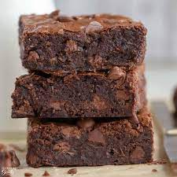

Brownie

Description
A tasty chocolate monster. Be careful or else you won't be able to put them down. I'm still eating mine from last week.
It only takes about 30 minutes but it doesn't last that long once they've cooled and made it to a plate.
Ingredients
-
5 eggs
-
1/2 cup unsweetened cocoa powder
-
2 1/2 cups white sugar
-
1 1/4 cups matzo cake meal
-
1 1/4 cups vegetable oil
-
1 1/4 cups chopped walnuts
Steps
-
In a large mixing bowl, beat the eggs and the sugar together. Add the oil. Mix in the cake meal and the cocoa.
-
Add nuts, or use the nuts as a topping. I put nuts on top rather than in this cake for two reasons. They make the top look good without having to frost it. Also, for those who don 1t or can 1t eat nuts, they are easily removed without having to search for them.
-
Pour batter into a greased 9 x 13 inch pan. Bake at 325 degrees F (165 degrees C) for about 35 minutes. The secret to a moist brownie cake, Pesach or otherwise, is to underbake it. Check it at about 30 minutes.
Home